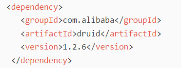
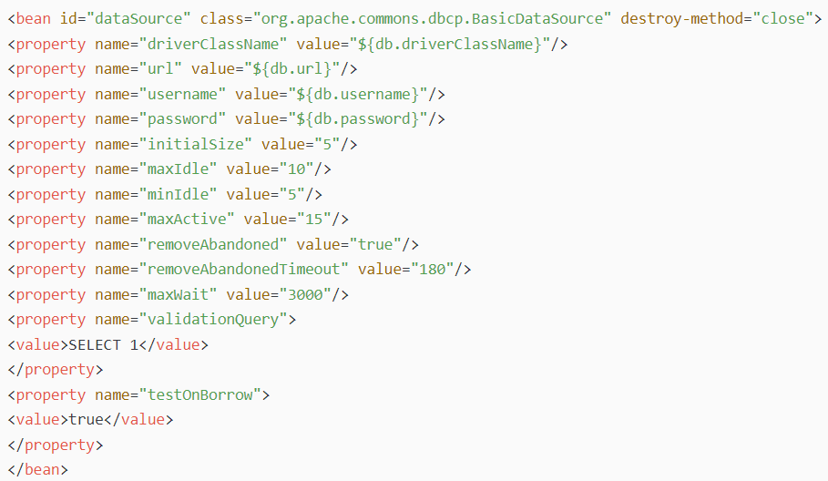

连接池
1、DataSource接口和数据库连接池的关系
DataSource接口是java专门用来描述数据源而提供的一个接口规范。
同时DataSource可以方便的实现连接池。
注意，数据源和连接池实际上是两回事。
1. 抛开连接池不说，数据源描述的就是数据库信息，只不过jdbc2.0提供了DataSource接口来规范数据源。
2. 连接池就是对数据库连接对象进行池化。说白了，连接池可以不使用DataSource规范，而直接通过DriverManager去创建连接然后将这些连接对象进行池化。
但是，JDBC2.0提供的DataSource接口，其目的就是为了将访问数据库的各种配置和步骤进行统一的规范，即它的目标就是通过使用DataSource规范，来约束数据源，并对连接池的实现提供了方便。
因此，很多地方会讲，DataSource数据源就是连接池，严谨来讲，这种描述是不对的（只不过所有的连接池的第三方实现都实现了DataSource接口，所以才会产生这种描述）。
尽管DataSource规范只是用来约束数据源的，它和数据库连接池没有必然连接，但是在DataSource的官方建议中，提供了目前主流的方式：
1. DataSource接口约束数据源，将数据库驱动连接、用户名、密码等进行配置化统一管理。
2. DataSource官方同样建议，对于DataSource的实现同时提供池化处理，然后将最大连接数、最小连接数、超时时间等进行配置化统一管理。
所以，我们可以这样理解：
1. 完全可以自己使用原生的DriverManager去创建一些连接对象，然后将这些连接对象缓存到某个容器池中，从而实现数据库连接池。
2. 自己也可以按照官方建议去实现DataSource接口，将数据源的各种配置和步骤统一管理，并且在实现DataSource接口时提供数据库连接的池化操作，实现后只需要从DataSource对象中通过getConnection()方法方便的获取数据库连接即可。
当然，DataSource接口只是一个接口规范，它没有要求实现者必须实现连接池的操作。因此，连接池的实现完全取决于自主，你想用什么方式实现都行。只不过主流的操作都是实现DataSource接口的同时，实现了连接池的处理。
所以，后续我们接触到的所有DataSource实现，几乎都提供了数据源约束和数据库连接池的同时实现。因此我们在讲解数据库连接池时，一般也会直接称之为数据源。
2、什么是数据库连接池？
数据库连接池，是一种池化的思想。和线程池原理类似，原始的每个客户端与数据库建立连接，都需要创建连接、执行SQL、关闭、释放连接等一系列操作，非常消耗资源，于是数据库连接池出现了。
就是一个容器持有多个数据库连接对象，连接池中预先打开一定数量的数据库连接，并维持着连接，当程序需要操作数据库可时直接从池中获取连接，使用完之后再还回池子中，而不是直接关闭这个连接。
3、为什么需要数据库连接池？
1. 节省资源，如果每次访问数据库都创建新的连接对象，创建和销毁都浪费系统资源。
2. 响应性更好，省去了创建的时间，响应性更好。
3. 统一管理数据库连接，避免因为业务的膨胀导致数据库连接的无限增多。
4. 便于监控。
总的来讲，数据库连接池优化了过去繁琐的jdbc连接数据库的那几个步骤，将传统的jdbc连接数据库中那些相同的步骤综合起来放在中间服务器上，比如tomcat就提供了连接池的服务，这样就减轻了应用程序的负担；在操作数据库时，直接通过连接池与数据库进行连接。
4、自定义数据库连接池
使用JDBC操作数据库,需要建立Connection,使用传统的JDBC操作需要每次创建Connection,创建Connection是一个非常性能和消耗时间的过程,我们需要在提高程序性能,那么就需要减少每次创建创建连接带来的负面影响,解决这个问题我们将利用池子概念,预先创建一些链接放入池子中,如果需要操作数据,不用创建新的Connection,只需要在池子中获取即可,使用完毕放入池子。这样就形成了复用。
前面已经讲过，数据库连接池怎么实现，有两种方式：
1. 自己采用DriverManager方式去实现数据库连接池。
2. 根据jdbc官方建议，通过实现DataSource接口规范去实现数据库连接池。
一：DriverManager方式方式实现连接池：
我们可以通过自定义的方式实现连接池!分析连接池类应该包含特定的属性和方法。
属性: 集合 放置Connection
方法: 获取连接方法，回收连接方法
public class Pool{
static LinkedList<Connection> list = new LinkedList<Connection>();
static{
for (int i = 0; i < 10; i++) {
Connection connection = JDBCUtils.newInstance().getConnection();
list.add(connection);
}
}
/**
* 从连接池子中获取连接的方式
* @return
*/
public static Connection getConnection(){
if (list.isEmpty()) {
Connection connection = JDBCUtils.newInstance().getConnection();
list.addLast(connection);
}
Connection conn = list.removeFirst();
return conn;
}
/**
* 返回到连接池子中
*/
public static void addBack(Connection conn){
if (list.size() >= 10) {
try {
conn.close();
} catch (SQLException e) {
// TODO Auto-generated catch block
e.printStackTrace();
}
}else{
list.addLast(conn); //10
}
}
/**
* 获取连接池子中连接数量的方法
*/
public static int getSize(){
return list.size();
}
}
二：通过实现DataSource规范的方式方式实现连接池：
Java为连接池实现提供了一个规范(接口),规范的写法,我们需要实现DataSource接口。
但是实现DataSource接口有一个弊端,没有提供回收链接方法。
这里我们将使用装饰者模式。
装饰Connection!具体实现代码如下:
创建装饰Connection：
public class MyConnection implements Connection{
//将被装饰者导入
private Connection conn;
private LinkedList<Connection> list;
public MyConnection(Connection conn, LinkedList<Connection> list) {
super();
this.conn = conn;
this.list = list;
}
@Override
public <T> T unwrap(Class<T> iface) throws SQLException {
// TODO Auto-generated method stub
return conn.unwrap(iface);
}
@Override
public boolean isWrapperFor(Class<?> iface) throws SQLException {
// TODO Auto-generated method stub
return conn.isWrapperFor(iface);
}
@Override
public Statement createStatement() throws SQLException {
// TODO Auto-generated method stub
return conn.createStatement();
}
@Override
public PreparedStatement prepareStatement(String sql) throws SQLException {
// TODO Auto-generated method stub
return conn.prepareStatement(sql);
}
@Override
public CallableStatement prepareCall(String sql) throws SQLException {
// TODO Auto-generated method stub
return null;
}
@Override
public String nativeSQL(String sql) throws SQLException {
// TODO Auto-generated method stub
return null;
}
@Override
public void setAutoCommit(boolean autoCommit) throws SQLException {
// TODO Auto-generated method stub
}
@Override
public boolean getAutoCommit() throws SQLException {
// TODO Auto-generated method stub
return false;
}
@Override
public void commit() throws SQLException {
// TODO Auto-generated method stub
conn.commit();
}
@Override
public void rollback() throws SQLException {
// TODO Auto-generated method stub
conn.rollback();
}
@Override
public void close() throws SQLException {
// TODO Auto-generated method stub
list.addLast(conn);
}
...
}
基于DataSource规范实现的连接池：
/**
* 创建一个规范的连接池子
*/
public class DataSourcePool implements DataSource{
static LinkedList<Connection> list = new LinkedList<Connection>();
static{
for (int i = 0; i < 10; i++) {
Connection connection = JDBCUtils.newInstance().getConnection();
list.add(connection);
}
}
public static int getSize(){
return list.size();
}
@Override
public Connection getConnection() throws SQLException {
// TODO Auto-generated method stub
Connection conn = list.removeFirst();
MyConnection conn1 = new MyConnection(conn, list);
return conn1;
}
@Override
public PrintWriter getLogWriter() throws SQLException {
// TODO Auto-generated method stub
return null;
}
@Override
public void setLogWriter(PrintWriter out) throws SQLException {
// TODO Auto-generated method stub
}
@Override
public void setLoginTimeout(int seconds) throws SQLException {
// TODO Auto-generated method stub
}
@Override
public int getLoginTimeout() throws SQLException {
// TODO Auto-generated method stub
return 0;
}
@Override
public Logger getParentLogger() throws SQLFeatureNotSupportedException {
// TODO Auto-generated method stub
return null;
}
@Override
public <T> T unwrap(Class<T> iface) throws SQLException {
// TODO Auto-generated method stub
return null;
}
@Override
public boolean isWrapperFor(Class iface) throws SQLException {
// TODO Auto-generated method stub
return false;
}
@Override
public Connection getConnection(String username, String password) throws SQLException {
// TODO Auto-generated method stub
return null;
}
}
5、第三方实现的数据库连接池
第三方厂商实现的数据库连接池的方案有不少。
开源的免费的数据库连接池：
1. C3p0：爷爷级别的数据库连接池，现在正式项目中用的很少了。
2. DBCP(Database Connection Pool)：名字很直白，数据库连接池，从Tomcat5.5开始，Tomcat内置了DBCP的数据源实现，所以可以非常方便的管理DBCP数据源。
3. Druid：阿里开源的数据源，Druid有强大的监控和扩展能力，强项在于监控。
4. HiKariCP：号称最快的数据库连接池，springboot2.0也已经把默认的数据源改为了HikariCP，强于性能。
商业的中间件连接池：
1. weblogic的连接池
2. websphere的连接池
6、使用DBCP连接池
DBCP(DataBase connection pool),数据库连接池。是 apache 上的一个 java 连接池项目，也是 tomcat 使用的连接池组件。单独使用dbcp需要2个包：commons-dbcp.jar,commons-pool.jar由于建立数据库连接是一个非常耗时耗资源的行为，所以通过连接池预先同数据库建立一些连接，放在内存中，应用程序需要建立数据库连接时直接到连接池中申请一个就行，用完后再放回去。
1. 导入相应jar包
mysql-jdbc.jar
commons-dbcp.jar
commons-pool.jar
2. 硬编码方式使用DBCP连接池
所谓的硬编码方式就是在代码中添加配置：
@Test
public void testHard() throws SQLException{
//TODO 硬编码 使用DBCP连接池子
BasicDataSource source = new BasicDataSource();
//设置连接的信息
source.setDriverClassName("com.mysql.jdbc.Driver");
source.setUrl("jdbc:mysql://localhost:3306/day2");
source.setUsername("root");
source.setPassword("111");
Connection connection = source.getConnection();
String sql = "select * from student";
Statement createStatement = connection.createStatement();
ResultSet executeQuery = createStatement.executeQuery(sql);
while (executeQuery.next()) {
System.out.println(executeQuery.getString(2));
}
connection.close(); //回收
}
3. 软编码方式使用DBCP连接池
所谓的软编码,就是在项目中添加配置文件,这样就不需要每次代码中添加配置。
（1）项目中添加配置
文件名称: info.properties
文件位置: src下
#连接设置
driverClassName=com.mysql.jdbc.Driver
url=jdbc:mysql://localhost:3306/day2
username=root
password=111
#
initialSize=10
#最大连接数量
maxActive=50
#
maxIdle=20
#
minIdle=5
#
maxWait=6000
代码实现如下：
@Test
public void testSoft() throws Exception{
//TODO DBCP软编码连接池子使用
BasicDataSourceFactory factory = new BasicDataSourceFactory();
Properties properties = new Properties();
//配置文件添加到properties对象中 javase
properties.load(new FileInputStream("src/info.properties"));
//生成连接池子 需要配置文件
DataSource source = factory.createDataSource(properties);
Connection connection = source.getConnection();
String sql = "select * from student";
Statement createStatement = connection.createStatement();
ResultSet executeQuery = createStatement.executeQuery(sql);
while (executeQuery.next()) {
System.out.println(executeQuery.getString(2));
}
connection.close(); //回收
}
7、使用C3P0连接池
C3P0是一个开源的JDBC连接池，它实现了数据源和JNDI绑定，支持JDBC3规范和JDBC2的标准扩展。目前使用它的开源项目有Hibernate，Spring等。
c3p0与dbcp区别：
1. dbcp没有自动回收空闲连接的功能；c3p0有自动回收空闲连接功能
2. dbcp需要手动设置配置文件；c3p0不需要手动设置
1. 导入jar包
c3p0-0.9.1.2.jar
mysql-connector-java-5.0.8.jar
2. 添加配置文件
c3p0是在外部添加配置文件,工具直接进行引用,因为直接引用,所以要求固定的命名和文件位置
文件位置: src
文件命名:c3p0-config.xml/c3p0-config.properties
<c3p0-config>
<!-- 默认配置，如果没有指定则使用这个配置 -->
<default-config>
<!-- 基本配置 -->
<property name="driverClass">com.mysql.jdbc.Driver</property>
<property name="jdbcUrl">jdbc:mysql://localhost:3306/day2</property>
<property name="user">root</property>
<property name="password">111</property>
<!--扩展配置-->
<!-- 连接超过30秒报错-->
<property name="checkoutTimeout">30000</property>
<!--30秒检查空闲连接 -->
<property name="idleConnectionTestPeriod">30</property>
<property name="initialPoolSize">10</property>
<!-- 30秒不适用丢弃-->
<property name="maxIdleTime">30</property>
<property name="maxPoolSize">100</property>
<property name="minPoolSize">10</property>
<property name="maxStatements">200</property>
</default-config>
<!-- 命名的配置 -->
<named-config name="zhaowf">
<property name="driverClass">com.mysql.jdbc.Driver</property>
<property name="jdbcUrl">jdbc:mysql://localhost:3306/day2</property>
<property name="user">root</property>
<property name="password">111</property>
<!-- 如果池中数据连接不够时一次增长多少个 -->
<property name="acquireIncrement">5</property>
<property name="initialPoolSize">20</property>
<property name="minPoolSize">10</property>
<property name="maxPoolSize">40</property>
<property name="maxStatements">20</property>
<property name="maxStatementsPerConnection">5</property>
</named-config>
</c3p0-config>
注意: c3p0的配置文件内部可以包含命名配置文件和默认配置文件!默认是选择默认配置!如果需要切换命名配置可以在创建c3p0连接池的时候填入命名即可。
3. 使用c3p0进行数据库操作
public class TestC3p0 {
public static void main(String[] args) throws Exception {
//1.创建C3P0连接池子
Connection connection = DataSourceUtils.getConnection();
Statement createStatement = connection.createStatement();
String sql = "select * from student;";
ResultSet resultSet = createStatement.executeQuery(sql);
while (resultSet.next()) {
System.out.println(resultSet.getString(1));
}
DataSourceUtils.close(connection, createStatement, resultSet);
}
}
4. 使用c3p0连接池编写工具类
基于c3p0连接池编写数据库操作工具类：
/**
* 从连接池子中获取连接！
*
* C3P0的连接池子
* 0.获取连接池子对象 DBUtils
* 1.获取连接
* 2.关闭资源
*/
public class DataSourceUtils {
private static ComboPooledDataSource dataSource = new ComboPooledDataSource();
/**
* 返回连接池对象方法
* @return c3p0连接池子
*/
public static ComboPooledDataSource getDataSource(){
return dataSource;
}
/**
* 连接池中获取连接的方法
* @return 连接
*/
public static Connection getConnection(){
Connection conn = null;
try {
conn = dataSource.getConnection();
} catch (SQLException e) {
// TODO Auto-generated catch block
e.printStackTrace();
}
return conn;
}
//关闭资源
public static void close(Connection conn){
if (conn != null) {
try {
conn.close();
} catch (SQLException e) {
// TODO Auto-generated catch block
e.printStackTrace();
}
}
}
public static void close(Statement st){
if (st != null) {
try {
st.close();
} catch (SQLException e) {
// TODO Auto-generated catch block
e.printStackTrace();
}
}
}
public static void close(ResultSet set){
if (set != null) {
try {
set.close();
} catch (SQLException e) {
// TODO Auto-generated catch block
e.printStackTrace();
}
}
}
public static void close(Connection conn,Statement st){
close(conn);
close(st);
}
public static void close(Connection conn,Statement st,ResultSet rt){
close(conn);
close(st);
close(rt);
}
}
8、使用Druid数据库连接池
Druid 是目前比较流行的高性能的，分布式列存储的OLAP框架(具体来说是MOLAP)。它有如下几个特点：
一. 亚秒级查询
druid提供了快速的聚合能力以及亚秒级的OLAP查询能力，多租户的设计，是面向用户分析应用的理想方式。
二.实时数据注入
druid支持流数据的注入，并提供了数据的事件驱动，保证在实时和离线环境下事件的实效性和统一性
三.可扩展的PB级存储
druid集群可以很方便的扩容到PB的数据量，每秒百万级别的数据注入。即便在加大数据规模的情况下，也能保证时其效性
四.多环境部署
druid既可以运行在商业的硬件上，也可以运行在云上。它可以从多种数据系统中注入数据，包括hadoop，spark，kafka，storm和samza等
五.丰富的社区
druid拥有丰富的社区，供大家学习
1. 导入jar包

2. 编写工具类
/**
* 阿里的数据库连接池
* 性能最好的
* Druid
* */
public class DruidUtils {
//声明连接池对象
private static DruidDataSource ds;
static{
///实例化数据库连接池对象
ds=new DruidDataSource();
//实例化配置对象
Properties properties=new Properties();
try {
//加载配置文件内容
properties.load(DruidUtils.class.getResourceAsStream("dbcpconfig.properties"));
//设置驱动类全称
ds.setDriverClassName(properties.getProperty("driverClassName"));
//设置连接的数据库
ds.setUrl(properties.getProperty("url"));
//设置用户名
ds.setUsername(properties.getProperty("username"));
//设置密码
ds.setPassword(properties.getProperty("password"));
//设置最大连接数量
ds.setMaxActive(Integer.parseInt(properties.getProperty("maxActive")));
} catch (IOException e) {
// TODO Auto-generated catch block
e.printStackTrace();
}
}
//获取连接对象
public static Connection getConnection() {
try {
return ds.getConnection();
} catch (SQLException e) {
// TODO Auto-generated catch block
e.printStackTrace();
}
return null;
}
}
3. 测试
public class Druid_Test{
@Test
public void test1(){
findAll();
find("小千千","47983");
}
public List<Master> findAll() {
// TODO Auto-generated method stub
Connection conn=null;
PreparedStatement pstat=null;
ResultSet rs=null;
List<Master> masters=new ArrayList<Master>();
try{
conn=DruidUtils.getConnection();
pstat=conn.prepareStatement("select * from master");
rs=pstat.executeQuery();
while(rs.next()){
int id=rs.getInt("id");
String name=rs.getString("name");
String password=rs.getString("password");
int money=rs.getInt("money");
masters.add(new Master(id, name, password, money));
}
return masters;
}catch(Exception e){
throw new RuntimeException(e);
}finally {
DbUtils.release(rs, pstat, conn);
}
}
public Master find(String name, String password) {
// TODO Auto-generated method stub
Connection conn=null;
PreparedStatement pstat=null;
ResultSet rs=null;
Master master=null;
try{
conn=DbUtils.getConnection();
pstat=conn.prepareStatement("select * from master where name=? and password=?");
pstat.setString(1, name);
pstat.setString(2, password);
rs=pstat.executeQuery();
if(rs.next()){
int id=rs.getInt("id");
int money=rs.getInt("money");
master=new Master(id, name, password, money);
}
return master;
}catch(Exception e){
throw new RuntimeException(e);
}finally {
DbUtils.release(rs, pstat, conn);
}
}
9、数据库连接池需要关注的参数
看下Druid 的数据库连接池的配置：

我们需要关注如下连接池配置：
1、driverClassName 使用的JDBC驱动的完整有效的Java类名,如连接 mysql com.mysql.cj.jdbc.Driver
2、jdbcUrl 数据库的连接。如 jdbc:mysql://127.0.0.1:3306/mydatabase
3、username 你懂的，数据库的用户名，如 root
4、password 太直白了 ，数据库的用户密码，如 p123456
5、initialSize 连接池创建的时候，自动创建的数据库连接数量，建议 10-50足够
6、maxIdle 最大空闲连接:连接池中允许保持空闲状态的最大连接数量,超过的空闲连接将被释放,如果设置为负数表示不限制，建议设置和 与initialSize相同，减少释放和创建的性能损耗。
7、minIdle 最小空闲连接:连接池中容许保持空闲状态的最小连接数量,低于这个数量将创建新的连接,如果设置为0则不创建
8、maxActive 最大同时激活的连接数量。
9、maxWait 如果连接池中没有可用的连接，最大的等待时间，超时则没有可用连接，单位毫秒，设置-1时表示无限等待，建议设置为100毫秒
10、testxxx 在对连接进行操作时，是否检测连接的有效性，如 testOnBorrow 在申请连接的时候会先检测连接的有效性，执行validationQuery ，建议线上的把此配置设置为false，因为会影响性能。
11、validationQuery 检查池中的连接是否仍可用的 SQL 语句,drui会连接到数据库执行该SQL, 如果正常返回，则表示连接可用，否则表示连接不可用，建议 select 1 from dual。
连接池的优化配置：配置最大连接数、最小连接数和最大等待时间等配置参数。
10、总结连接池
1. jdbc原始操作步骤：加、建、创、执、处、关（加建创执处关）
2. 其中“加、建、创、关”这几个步骤是模板方法，每次都得执行，所以，可以考虑将这几个步骤进行池化技术，即使用一个对象保存这几个步骤需要的信息然后反复使用即可。数据库连接池就是用来实现这个功能。
3. 连接池本质
数据库连接池就是对jdbc连接数据库时的“加、建、创、关”等步骤进行的对象池化技术，里面放置了很多Connection对象。
因为第三方厂商对于连接池的实现都遵循了DataSource规范，即都实现了DataSource接口，因此我们一般所讲的数据库连接池指的就是DataSource，即连接池几乎等同于数据源的概念。
数据源的实现依赖于第三方厂商或者某些开源框架。数据源的本质是DataSource对象，里面封装了连接数据库的各个信息，有些信息又是一个Properties对象保存了数据库配置的各种属性。
数据源需要实现，不同的厂商有不同的实现。实现后通过配置如下方式即可轻松的获取Connection对象：
<!-- 配置数据源,通过Spring自带的bean -->
<!-- 执行完bean dataSource的所有方法后执行destroy-method属性指定的方法 -->
<bean id="dataSource" class="org.apache.commons.dbcp.BasicDataSource" destroy-method="close">
<!-- 通过property属性注入依赖成员 -->
<property name="driverClassName" value="oracle.jdbc.driver.OracleDriver" />
<property name="url">
<value>jdbc:oracle:thin:@localhost:1521:orcl</value>
</property>
<property name="username" value="oracle" />
<property name="password" value="oracle" />
</bean>
4. java中获取数据源
（1） 自定义解析类获取：
自己将数据源配置在某个配置文件中，自己实现配置文件的解析类，读取到数据源指定的key，获取数据源信息（即Connection对象）。
（2） 交给框架获取
统一交给框架管理，框架直接将数据源配置在xml文件或者properties文件中，并且对该文件的加载也是由框架的加载类自动加载以获取数据源信息的。
（3） 交给JNDI获取
数据源交给框架管理，但是框架使用JNDI对数据源进行管理，对JNDI的获取可以自己实现获取，也可以交给框架自动获取JNDI对象。
（4） spring对数据源的获取
如下，spring框架对数据源的管理，将数据源当做普通的bean进行配置即可：
<!-- 配置数据源,通过Spring自带的bean -->
<!-- 执行完bean dataSource的所有方法后执行destroy-method属性指定的方法 -->
<bean id="dataSource" class="org.apache.commons.dbcp.BasicDataSource" destroy-method="close">
<!-- 通过property属性注入依赖成员 -->
<property name="driverClassName" value="oracle.jdbc.driver.OracleDriver" />
<property name="url">
<value>jdbc:oracle:thin:@localhost:1521:orcl</value>
</property>
<property name="username" value="oracle" />
<property name="password" value="oracle" />
</bean>
或者将数据源配置在单独的properties文件中，再通过bean去加载该文件即可：
<!-- 数据源是需要实现的，由不同的方式实现，比如dbcp,c3p0,odbc等；实现过程就是将数据库的指定配置实例化成Connection对象进行存储 -->
<!-- 数据源，使用dbcp；class是dbcp的数据源实现 -->
<bean id="dataSource" class="org.apache.commons.dbcp.BasicDataSource" destroy-method="close">
<property name="driverClassName" value="${jdbc.driver}" />
<property name="url" value="${jdbc.url}" />
<property name="username" value="${jdbc.username}" />
<property name="password" value="${jdbc.password}" />
<property name="maxActive" value="10" />
<property name="maxIdle" value="5" />
</bean>
（5）mybatis框架对数据源的获取：
<!-- 数据源（连接池）和数据库事务配置 -->
<!-- 和spring整合后 environments配置将废除
mybatis本身还在SqlMapConfig.xml文件中提供了数据源和事务的配置，和spring整合后这些配置将全部由spring进行配置
mybatis的事务和数据源是由mybatis自己实现的，没有使用dbcp，c3p0，odbc等
-->
<environments default="development">
<environment id="development">
<!-- 使用jdbc事务管理，事务控制由mybatis-->
<transactionManager type="JDBC" />
<!-- 数据库连接池，由mybatis管理-->
<dataSource type="POOLED">
<property name="driver" value="${jdbc.driver}" />
<property name="url" value="${jdbc.url}" />
<property name="username" value="${jdbc.username}" />
<property name="password" value="${jdbc.password}" />
</dataSource>
</environment>
</environments>
mybatis也可以将数据源配置在properties文件中再通过xml配置文件去读取即可：
<!-- 加载属性文件，mybatis在加载这些关联文件时也是从classpath下直接找的，所以都是配置的是classpath的相对路径 -->
<!-- MyBatis 将按照下面的顺序来加载属性：
1-在 properties 元素体内定义的属性首先被读取。
2-然后会读取properties 元素中resource或 url 加载的属性，它会覆盖已读取的同名属性。
3-最后读取parameterType传递的属性，它会覆盖已读取的同名属性。
建议：
不要在properties元素体内添加任何属性值，只将属性值定义在properties文件中。
在properties文件中定义属性名要有一定的特殊性，如：XXXXX.XXXXX.XXXX
-->
<properties resource="sqlmapconfig/db.properties">
<!--properties中还可以配置一些属性名和属性值，直接将对应的key-value编码到下面 -->
<!-- <property name="jdbc.driver" value=""/> -->
</properties>
（6）spring通过JNDI对数据源的获取：
spring通过weblogic配置的JNDI进行数据源的获取：
<bean id="dataSource" class="org.springframework.jndi.JndiObjectFactoryBean">
<property name="jndiName"><value>icmpDataSource</value></property>
</bean>
5. 项目中如果集成了spring的话，往往是通过spring的加载方式进行数据源的配置，可以直接配置在applicationContext.xml文件中，也可以配置在dataSource.properties文件中再通过applicationContext.xml文件进行引用，还可以直接通过web服务器比如tomcat、wenlogic等进行数据源的配置然后通过spring引用JNDI进行数据源的获取。spring的IOC和DI机制可以方便的将任何需要的bean都能够自动注入并将依赖的关系进行注入。